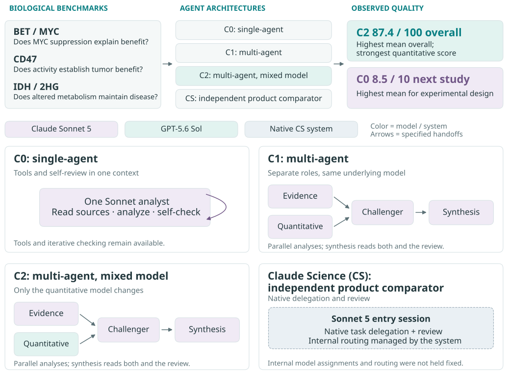

Benchmark-to-Bedside
An informal test (n=24) of agentic architectures: evidence, reasoning, and synthesis in cancer biology.
INTRODUCTION
The concept of an “AI for Science” is a useful umbrella, but the tools underneath should be shaped around distinct reasoning tasks rather than academic neighborhoods; a medicinal chemist’s needs could better resemble a mathematician’s or an architect's than a cosmologist's, irrespective of professional labels. It is therefore useful to decompose agentic functions into discrete domains of what they're good at, e.g., statistical inference versus web retrieval and content extraction, or causal reasoning versus verification. On top of this, we can install coordination layers that route tasks, manage context, and allocate compute accordingly. Such hierarchical agentic systems make it possible to divide an evidence-heavy or multimodal task among specialist sub-agents, check their work, and, ideally, synthesize a decision. In areas like therapeutic development, where ~91% of drugs fail [1], there is clear value to be gained from better-informed biological judgments.
A biotech program in pursuit of a novel drug must precisely navigate vast catalogs of disjointed, fragmented, and incomplete data, isolate signal from noise, generate testable hypotheses and resolve them, then isolate the principal drivers of biological effect. Its needle must thread that pattern across model organisms—cells in the lab, to mice and larger animals, then humans—all the while managing to stay afloat amid rapid capital burn rates and a wall of skeptical investors. Successful programs are those that learn to pattern-match across disparate knowledge bases to reduce correlated error rates and translate ambiguity into decision-grade data.
Adoption of LLM-based decision frameworks in biology has been variable: prominent in data retrieval and analysis, modest in ideation and drug candidate generation, but so far scarcely deployed as a project- or program-level decision maker. Drug development decisions require correct attribution of a measured effect to its biological cause, and mature intuition of the experiment needed to resolve uncertainty. I've been curious about methods for establishing trust in LLM-derived judgment: what benchmark criteria must be met before scientists and clinicians are prepared to meaningfully act on its decisions? If delegated trust is established at the project level, for instance, then this work can be parallelized while expert human attention shifts toward program-level strategy.
To compare performance effects across LLM agentic architectures on therapeutic data interpretation tasks, I constructed a simple experiment based on published preclinical studies. I built a custom multi-agent coordinator to launch the agents, pass their outputs between stages, and manage execution limits; I then defined a focused biological benchmark, i.e. a defined set of tasks and scoring criteria curated from cancer-biology replication studies in cell and mouse models [2–4]. I specified what scientifically sound work should deliver: reconstruction of observed biological effects, reconciliation of conflicting observations, and rational design of an informative next experiment. Four agentic workflows received the same starting materials, scientific strategy questions, analysis requirements, and deliverable specifications; each ran twice per dataset under an identical time target before evaluation against a frozen rubric and reference analyses. All agents operated in separate workspaces with configured tool and access restrictions.
Computationally, the experiment tests whether inference-time scaffolding—the software and instructions organizing how foundation models work—improves scientific answer quality through task decomposition, context management, tool use, and verification. In custom setups, I prescribed the agent roles, handoffs, and resource limits, but the models chose how to carry out their assigned analyses. This allows for matched comparisons of (1) a single tool-using LLM agent and (2) four agents using the same model under a programmed coordinator, with exploratory comparisons to (3) the same workflow using a different model for quantitative analysis and (4) Claude Science’s native orchestration. We should therefore expect domain-specific tradeoffs, with any orchestration advantage contingent on decomposition creating more gains in useful verification than losses in coordination.
Biologically, the benchmark comprised three biological evidence audits, each requiring (1) quantitative reconstruction of biological effects from primary data, (2) a development decision, and (3) one discriminating next experiment. Agents analyzed data packets that combined gene expression and molecular assays, animal efficacy and safety measurements, patient metabolite data, and published analyses. Specifically, the BET/MYC inhibition packet asks whether molecular changes explain therapeutic effects; the CD47 immune-checkpoint blockade packet asks how conflicting efficacy and toxicity evidence should affect advancement; the IDH-mutant enzyme packet asks whether an altered enzyme activity establishes a disease mechanism.
{kind=link}

RESULTS
| Condition | Quality / 100 | Flagged outputs |
|---|---|---|
| C0 | 79.4 | 4/6 |
| C1 | 77.5 | 4/6 |
| C2 | 87.4 | 2/6 |
| CS | 82.9 | 3/6 |
Table 1. Mean quality and critically flagged outputs; six outputs per condition.
Across the 24 outputs, C2 had the highest mean score (87.4/100), followed by CS (82.9), C0 (79.4), and C1 (77.5; Table 1). In the primary comparison, the prescribed same-model team, C1, scored 1.9 points below the single analyst, C0. The workflows nevertheless differed substantially by biological task and scoring component (Figure 1). C2 led BET and CD47, with means of 85.8 and 90.6, respectively. C1 had the highest IDH mean (88.6), despite the lowest BET mean (59.4). C2 and CS showed larger differences between their IDH repeats: 94.3 versus 77.1 for C2 and 93.1 versus 80.6 for CS. Their second IDH outputs were incomplete: C2 lacked the decision memo, and CS lacked the analysis script.


C2’s clearest strength was quantitative validity and reproducibility (34.3/35; Figure 2). Its evidence score equaled C0’s (24.2/30), and their interpretation scores were nearly identical (21.2 versus 21.1/25). CS had the highest mean evidence score (24.7/30) and was close to C0 on next-study design (8.4 versus 8.5/10), compared with 7.8 for C2 and 7.7 for C1. C1 scored above C0 on quantitative work (29.8 versus 25.6/35), but below it on the other three components.
The quantitative differences partly reflected the eight-point reproducibility item. C0’s replay failures included output-format incompatibilities, although separate numerical-reporting defects remained (Supplement). In a post hoc sensitivity analysis excluding that item, C2 retained the highest overall score, but its margin over C0 narrowed from 8.0 points on the 100-point scale to 3.5 on the remaining 92-point scale. C1’s quantitative advantage over C0 narrowed from 4.1 points to 0.6 on the remaining 27-point quantitative scale. The original scores remain unchanged.
Recommendations broadly converged on conditional BET investigation, deferral of CD47 monotherapy, and withholding IDH disease-dependence claims. Their supporting work differed: C2’s first BET output quantified the requested active/inactive MYC contrast with uncertainty, while C0’s first IDH proposal combined drug and genetic perturbation with 2HG add-back. The proposed experiments remain untested. Existing BET rescue evidence was omitted across workflows, and CD47 anemia was overinterpreted in every condition. C2 had the fewest critically flagged outputs (2/6), but both C2 BET outputs retained evidence omissions that did not receive critical flags.
The results support evaluating delegation by reasoning function. C1’s quantitative gains over C0 accompanied lower evidence, interpretation, and next-study scores, although C1 led on IDH. C2’s advantage was principally quantitative; C0 and CS led next-study ratings, and CS had the highest evidence mean. The effects of parallelism, model diversity, and review remain unresolved, as C1/C2 bundled parallel analysis with fixed roles, budgets, challenge, and synthesis; no otherwise identical sequential or reviewer-free workflow was tested. Follow-up comparisons should vary these components separately under matched allowances, with blinded experts assessing evidence coverage, experimental feasibility, and interpretation of weak, discordant, or technically failed results. Workflows meeting these criteria could then be evaluated on in-house experimental data.
In reinforcement learning, rigorous benchmarks are an important lever of control in steering LLM behavior, guiding the rewards against which models evolve. They also can expose hidden brittle behaviors, guide hyperparameter optimization, and isolate whether performance gains stem from architectural innovation or biases due to environmental overfitting. Biology is inherently non-deterministic, with noisy stochastic processes and high-complexity feedback loops. Navigating it exposes unique vulnerabilities in model reliability, and closing these gaps requires deliberate deployment across a precisely defined set of relevant, task-aware scenarios and quantitative metrics to evaluate them.
METHODS
Agentic architectures. C0 provides a single-agent control in the custom environment using one Claude Sonnet 5 agent with tools and self-review. C1 and C2 were custom workflows I implemented: a Python orchestration harness around the existing, version-pinned Conclave execution kernel. C1 used four Claude Sonnet 5 agents: evidence and quantitative analysts working in parallel, a challenger reviewing their work in a separate conversation, and a synthesizer assembling the answer. C2 retained this arrangement but introduced heterogeneous models with GPT-5.6 Sol as the quantitative agent. Claude Science (CS) used Anthropic's Sonnet 5 entry session with native delegation and review. The primary comparison, C1–C0, tested whether decomposing work improved quality under matched nominal allowances. C2–C1 explored changing the quantitative model; any benefit could reflect that model’s capability, not diversity itself. CS served as the independently operated product comparator; Anthropic describes Claude Science as a hierarchical agentic workbench: a generalist coordinator with specialist delegates supported by scientific tools, persistent execution environments, artifact provenance, and a reviewer for citations and calculations. The development process had five parts: (1) define the division of labor. (2) implement explicit handoffs; each agent ran in a fresh workspace and conversation; the harness passed files, source manifests, and execution-status records between stages. (3) control execution; model assignments, tool access, stage budgets, deadlines, and required deliverables. (4) test and repair the coordination. Offline tests exercised scheduling, failures, accounting, and artifact delivery. (5) freeze and evaluate.
Benchmarking. Required deliverables were a decision memo of ≤1,500 words, a table of 6–10 consequential claims, executable Python analysis, and structured numerical results. All conditions received the same frozen evidence for each case; external retrieval was prohibited. Two model graders scored each output. A separate acceptance gate required ≥80/100 overall, ≥25/35 quantitative points, successful code replay, and no unresolved critical error. These were rubric-based model judgments, not independent biological validation.
Domain-specific tasks. For each bounded evidence audit, I asked every condition to reconstruct consequential effects with uncertainty, audit the evidence, consider the strongest alternative explanation, and propose one feasible discriminating study with controls, readouts, and interpretation rules. Specifically: does BET inhibition merit advancement on a MYC-mediated rationale; is CD47 monotherapy supported in the supplied breast-tumor model; and does IDH2 R172K evidence establish altered enzyme activity or also disease-maintenance dependence? Required outputs were a ≤1,500-word decision memo, a 6–10-claim CSV evidence table, executable Python analysis, and numerical results in JSON, a structured machine-readable format.
Starting materials. Primary data packets were assembled from three replication-study publications by the Reproducibility Project: Cancer Biology [2–4]. Inputs were selected for task diversity, but do not represent a systematic sample of drug-development programs. Each packet included a numbered, plain-text replication article, CSV tables of measurements and published meta-analysis summaries, and source provenance. BET and IDH also included original-article text; BET included its correction. Available R analysis scripts accompanied BET and CD47. These were processed, machine-readable source materials: no raw instrument files or independent image interpretation were required. Supplementary Table S1 inventories inputs. BET contained qPCR expression, mouse bioluminescence, and survival records. CD47 contained serial tumor volumes, terminal weights, hematology, and ordinal immune-pathology scores. IDH contained lysate absorbance time courses and gas chromatography–mass spectrometry signal tables from engineered cells and patient samples, including quality-control and blank samples.
Execution and assessment. Candidates could use installed Python and shell tools but could not retrieve external evidence, inspect other runs, or consult hidden references. Runs had a 15-minute target and condition-specific allowances (Supplement S3). Time and cost contributed no quality points. Actual compute was not matched across products, and incomplete stages remained part of the observed performance. I used two model graders in fresh conversations—Sonnet 5 and GPT-5.6 Sol—with condition labels withheld. They received the frozen rubric, separately computed reference analyses, packet sources, and code-execution receipts. Scores allocated 35 points to quantitative validity/reproducibility, 30 to evidence, 25 to interpretation, and 10 to next-study design. Output scores averaged the graders; condition means averaged six outputs. Critical flags identified potentially decision-changing errors reported by either grader. These are model judgments, not expert validation or calibrated probabilities of correctness. With three biological cases, comparisons are descriptive. I retained the original scores; decision summaries and removal of eight reproducibility points were post hoc.
REFERENCES
1. Filipova D et al. Need for NAMs: A systematic evidence synthesis revealing over half a century of drug development failure. NAM Journal 2:100119 (2026). doi:10.1016/j.namjnl.2026.100119.
2. Aird F, Kandela I, Mantis C, and Reproducibility Project: Cancer Biology. Replication Study: BET bromodomain inhibition as a therapeutic strategy to target c-Myc. eLife 6:e21253 (2017). https://doi.org/10.7554/eLife.21253. The supplied correction was included in the BET packet.
3. Horrigan SK and Reproducibility Project: Cancer Biology. Replication Study: The CD47-signal regulatory protein alpha (SIRPa) interaction is a therapeutic target for human solid tumors. eLife 6:e18173 (2017). https://doi.org/10.7554/eLife.18173.
4. Showalter MR et al. Replication Study: The common feature of leukemia-associated IDH1 and IDH2 mutations is a neomorphic enzyme activity converting alpha-ketoglutarate to 2-hydroxyglutarate. eLife 6:e26030 (2017). https://doi.org/10.7554/eLife.26030.
SUPPLEMENTARY INFO
Coordinator code is available on GitHub. Supplementary materials include methods, prompts, the scoring rubric, results tables, analysis code, individual model answers, and reviewer assessments. Study execution and analysis were assisted by Claude Code running Fable 5.1 and OpenAI Codex running GPT-6 Astra via local command-line integration. The ratings come from model graders; independent human expert validation remains outstanding.
LIMITATIONS
Resource allocation complicates interpretation. All 12 C1/C2 evidence stages reached cost limits with incomplete deliverables, while recorded transfers preserved available files. Incomplete source work may have constrained subsequent review and synthesis, but its contribution to score differences was not isolated. A single-agent GPT comparator was absent, and CS’s native routing and allowances differed. Persistent mechanistic errors show that scheduling review did not ensure effective verification.